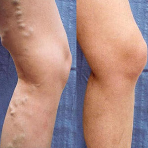
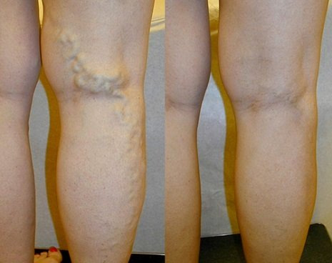
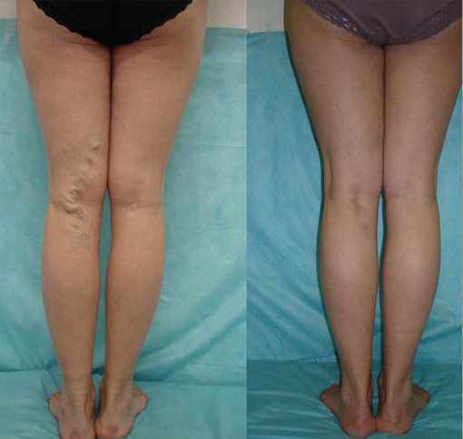

أخصائي علم الأوردة: الدوالي عند النساء هي مشكل خطيرة. ومع ذلك ، يمكن التخلص منها بسهولة في المنزل اليوم.
وفقًا للإحصاءات ، يتم تشخيص الدوالي واضطراب تدفق الدم لدى 72٪ من النساء فوق سن الخمسين (37٪ لدى النساء فوق سن 30). أخطر ما في هذه المشكلة هو أنها لا تتحسن بمرور الوقت: يزداد توسع الأوردة تحت الجلد ، مما يعني أن تورم الأطراف والألم وخطر تجلط الأوعية الدموية يزداد أيضًا.
ومع ذلك ، باستخدام الوسائل الحديثة ، يمكن التخلص من هذه المشكلة بسهولة. جراح مستقل وطبيب فخري وعالم فخري وعضو الجمعية الأوروبية لأخصائيي الأوردة وعضو مجلس إدارة نقابة علماء الأوردة وأستاذ ومدير المركز الطبي الحديث لعلم الأوردة الدكتور عباس مهدي يوضح الطرق الحديثة للتخلص من من الدوالي عند النساء والرجال.
- دكتور مهدي لماذا الدوالي خطيرة جدا على نصف البشرية؟
- حسنًا ، الحقيقة هي أن الكثيرين لا يدركون حتى أنه مشكلة كاملة ويقللون من عواقبه. يأمل الكثير أن يختفي من تلقاء نفسه بمرور الوقت ، لكن الحقيقة هي أنه لا يزول أبدًا. لا يمكن أن تدمر الدوالي حياة الشخص فقط بسبب التورم المستمر ومتلازمة الألم ، ولكن أيضًا لأنها تتطور إلى معقدات. بالمناسبة ، كل هذا له أسبابه: في الأشخاص الذين يعانون من الدوالي في الأطراف السفلية ، يُلاحظ دائمًا فرط تصبغ الجلد ، ويسود لون مزرق ، وفي الحالات الأكثر تقدمًا تحدث القرحة الغذائية. يلاحظ الأشخاص المحيطون بهؤلاء المصابين كل ذلك ، مما يؤدي لاحقًا إلى وجود مجمعات. أولئك الذين يعانون من الدوالي عليهم تعديل خزانة ملابسهم لإخفاء المشكلة: يرتدون أحذية فضفاضة وسراويل طويلة وجوارب داكنة.
ومع ذلك ، فإن الخطر الرئيسي لهذه المشكلة هو انها التهاب الوريد الخثاري تتطور على خلفيته. يؤدي التهاب الوريد الخثاري (التهاب الجدار الداخلي للوريد) إلى تكوين جلطات دموية يمكن أن تسد تجويف الوريد بتكوين تجلط وريدي ، وكذلك تدخل الرئتين من خلال نظام الوريد التناسلي السفلي عن طريق الانفصال. من جدار الأوعية الدموية. في هذه الحالة ، يمكن أن تحدث الجلطات الدموية في الشريان الرئوي ، وهي مضاعفات خطيرة ومميتة في بعض الأحيان.
إذا لم يتم التخلص من الدوالي ، فسيحدث ارتفاع ضغط الدم الوريدي الديناميكي: عند المشي ، يتوقف الضغط في الجهاز الوريدي عن الانخفاض إلى الأعداد اللازمة لضمان نضح الدم الطبيعي عبر الأنسجة. يحدث القصور الوريدي المزمن. في البداية ، تظهر الوذمة ، ثم تخترق خلايا الدم (كريات الدم الحمراء ، الكريات البيض) مع السوائل الأنسجة تحت الجلد. يتطور التصلب الجلدي الشحمي وفرط التصبغ. مع الحفاظ اللاحق وتعميق اضطرابات دوران الأوعية الدقيقة وركود الدم ، تموت خلايا الجلد وتحدث القرحة الغذائية. وهذا يعني بالفعل الإعاقة.
في الواقع ، الأشخاص الذين يحاولون بأنفسهم في محاربة الدوالي (أو الذين لا يقاومونها على الإطلاق) يعيشون مع قنبلة موقوتة. أنا بصراحة لا أفهم لماذا يفعلون ذلك. يوجد الآن طرق فعالة جدًا للتخلص ن الدوالي. في غضون 2-3 أسابيع ، من الممكن أن تنسى هذه المشكلة إلى الأبد.
- هل تتحدث عن طرق جراحية؟
- بالطبع لا. علاوة على ذلك ، أريد نهى الجميع عن مثل هذه العمليات. بما في ذلك استخدام الليزر. على الرغم من السرعة العالية لعمليات التلاعب التي يتم إجراؤها ، فإن لهذه العمليات العديد من الآثار السلبية على صحة المرأة ، حيث يمكن أن تؤدي إلى انفصال جلطة دموية. لكن العيب الرئيسي للتدخل الجراحي هو أنه مجرد إزالة جمالية للمشكلة ، أي عواقب المشكلة وليس سببها .
منذ أن تبقى السبب، فإن المشكلة سوف تظهر مرة أخرى في المستقبل. وبسرعة كبيرة ، في غضون 1-2 سنوات.
إذا كنت تريد التخلص من الدوالي بشكل نهائي ، فعليك القضاء على السبب. تعتبر آلية التحفيز في تطور الدوالي بمثابة اضطراب في الأداء الطبيعي للصمامات الوريدية مع ظهور تدفق عكسي (ارتداد) للدم.
أثناء العمليات ، يتم تنظيف الأوعية الوريدية أو تنظيف جزء من الوريد تمامًا ، ومع ذلك ، لا يتم تحسين التشغيل الطبيعي للصمامات من خلال هذا التلاعب. هذا يؤدي إلى تكرار المشكلة. لهذا السبب ، توقفنت عن التوصية بالجراحات للدوالي منذ فتة طويلة .
- بماذا تنصح كيف نتخلص من الدوالي؟
- على سبيل المثال ، منتج جيد جدًا يمكنه مساعدتك على التخلص من حتى الدوالي الأكثر تقدمًا هو ، الذي تم تطويره في عام في الجزائر . نظرًا لأن هذا المنتج مصمم للاستخدام المنزلي و هو طبيعي 100% ، فهو رخيص جدًا مقارنة بالمنتجات المتوفرة في الأسواق و هي منتجات جميعها كيميائية للأسف .
- هل يمكنكم إعطاء بعض الأمثلة الملموسة للتخلص من الدوالي بهذا المنتج؟
- نعم بالطبع. يمكنني إحصاء مئات الحالات ، لكنني سأركز على الحالات التي تُظهر معظم فوائد التخلص من الدوالي باستخدام هذا المنتج:
تخلصت من الدوالي تمامًا. فترة الإستخدام: أسبوعين.
اختفى تماما الألم الرهيب الذي رافق المصابة لمدة عامين. تحسنت الأوردة.
كانت فترة الإستخدام شهرين. تحسنت الأوردة تمامًا.
تظهر الصور بوضوح أن CardioFort لا يخفف الأعراض فحسب ، بل يؤدي أيضًا إلى عمليات تجديد الدوالي. نتيجة لذلك ، يتم تحسين الأوردة بالكامل.
وفقًا لنتائج الدراسات السريرية ، بالإضافة إلى ممارسة الاستخدام ، يعتبر المنتج الرئيسي للتخلص الدوالي. وأفضل ما في الأمر أنه يمكن إستخدامه في المنزل. بعد كل شيء ، كثير من الناس لا يريدون الذهاب إلى المختصين . وهذا أمر مفهوم ، خاصة في سياق الأحداث الأخيرة. يساعد على التخلص من الدوالي بشكل فردي.
- هل هذا المنتج المكمل الغذائي أم حبوب؟
- هو مكمل غذائي في شكل كبسولات . يساعد على وقف نمو الدوالي ويعيد ترميم الأوردة بفضل تركيبة خاصة. هو تطور فريد من نوعه حاصل على براءة اختراع لعلمائنا. لا يوجد في أي مكان آخر في العالم منتجات مثل هذه.
أيضًا ، إنه ليس دواءً ، ولكنه منتج طبيعي تمامًا يستبعد تفاعل الحساسية والمشاكل الأخرى التي قد تنشأ أثناء الإستخدامم . كما أنه لا يضع ضرراً على الجسم ، مما يساعدك على التخلص من إستخدام العديد من المركبات الكيميائية المتنوعة.
- إذا لم يباع CardioFort في الصيدليات فكيف يمكن الحصول عليه؟
- الأمر بسيط للغاية ، يمكنك الحصول على المكمل الغذائي CardioFort عن طريق الاتصال بمعهد الاوردة من خلال الموقع الرسمي أو عن طريق ملء نموذج الطلب الرسمي بالأسفل . يشارك هذا المنتج بانتظام في العديد من برامج التخفيض في الجزائر ، مما يجعله اجتماعيًا حقًا.
على سبيل المثال ، يشارك CardioFort الآن في البرنامج الخاص "معاً للتخلص من الدوالي " والذي بموجبه يمكنكم الحصول عليه في الجزائر بتخفيض كبير جداً قارن الآن سعر هذا المنتج بأسعار المواد الكيميائية التي تباع في الأسواق الأن .
يساعد حتى في الحالات الأكثر تقدمًا من دوالي الأوردة ، ولهذا السبب يُنصح به حتى للأشخاص الذين يعانون من شكل حاد من مشكلة الدوالي . يمكن استخدامه أيضًا كطريقة وقائية.
أود أن أشارك نتائج الدراسات السريرية بعد الانتهاء من دورة الإستخدام مع CardioFort التي فاجأت العديد من المختصين بسرور. سيكون خلاصًا حقيقيًا لأولئك المصابين الذين يعانون من الدوالي المتقدمة.
1. كانت فعالية المكمل الغذائي CardioFort ،
المحسوبة وفقًا
للطريقة القياسية (عدد حالات التخلص من الدوالي من إجمالي عدد
المصابين في مجموعة مكونة من 570 شخصًا ) كما يلي:
- تخفيف الآلام - 99٪.
- تقليل انتفاخ الساق - 98٪.
- تقليل الثقل والانزعاج في الرجلين - 99٪.
- غياب توسع الشعيرات بنسبة 98٪.
- التخلص من الدوالي - 93٪.
- القضاء على فرط التصبغ - 96٪.
2. لم يتم تحديد أي آثار جانبية غير مرغوب فيها ، بما
في ذلك الحساسية.
3. CardioFort معترف به
باعتباره المنتج الرائد في مكافحة الدوالي.
- أعتقد أن قرائنا سيكونون مهتمين بمعرفة كيفية شراء CardioFort مع برنامج التخفيض الخاص .
- يعمل البرنامج حاليا في الجزائر . هناك نقص حاد في أحجام الإنتاج . عندما تنتهي دفعة المنتج المعدة للجزائر ، فإنها "تتوقف عن التشغيل" وتنتظر برنامج التخفيض التالي .
يمكن شراء المكمل الغذائي CardioFort يتخفيض كبير . . كل ما عليك فعله لتلقي هذا المنتج هو ترك طلب على هذا الموقع في نموذج الطلب أدناه ، مع الإشارة إلى اسمك ورقم هاتفك حتى يتمكن موظفو الشركة المصنعة من الاتصال بك . لذا ، إذا رأيت أنه يمكنك تقديم طلبك ، فهذا يعني أن المنتج لم ينفذ تمامًا بعد. أنا شخصياً أضمن استلام المنتج لكل من ترك طلباته.
- ربما تريد أن تقول شيئًا لقرائنا قبل أن ننهي المقابلة؟
- الشيء الوحيد الذي أريد أن أقوله هو أنك لست في عجلة من أمرك للموت مبكرًا ، اعتني بصحتك. قد لا يشكون حتى في أن لديهم دوالي. يبدأ هذه المشكلة بشكل غير واضح تمامًا: يظهر ثقل وإرهاق في الساقين ، وينشأ التورم بعد مجهود كبير ، وتتطور شبكات الأوعية الدموية - ويمكن متابعة هذه القائمة. نتيجة لذلك ، لن يلاحظوا حتى كيف يعانون من مشاكل صحية عديدة. وكل ذلك دون الحديث عن عدد كبير من الوفيات المفاجئة التي ترتبط عادة بتطور الخثار. لا تنتظر حتى فوات الأوان! ابدأ الوقاية أو التخلص منه الآن. من جانبنا ، قمنا بكل شيء على الإطلاق حتى يتمكن أي شخص من القيام بذلك.
-خصم 65 %
تنتهي صلاحية العرض في
عند شرائك دورة CardioFort
عائشة
شريتو هاد مكمل ،بزاف هايل ،ننصحكم به👍

بيبي
هدا مكمل ساعدني بزاف .شكراً لكم .
فاطمة
CardioFort ا نقضلي زواجي،راني فرحان بزاف كي لقيت هاد منتوج

جميلة
سيييت شحال من حاجة،مي كارديوفورت مكاش كما هو،فوووور يعطكم صحا👌
الميرا
منتج رائع جربته انا و أخي سابقاً و كان الأمر رائعاً . شكراً لكم جميعاً على المصداقية و التخفيض
حنان
انا كمنديتو بارح مزال ملحقنيش،انشاء لله اليوم الحقولي امانتي .

جوليا
سييت شحال من منتوج مي عاوني غير CardioFort
خديجة
أستخدمه منذ أسبوعين. لكي أكون صادقاً، لم أكن اتوقع مثل هذه النتائج المذهلة.
لطيفه
رائع. يجدر بي أن أجربه.
مايشا
هذا الإختراع هو أعظم شيء في القرن الحادي و العشرين
نادرة
لم ألاحظ على الفور على الموقع أنه يمكنك الدفع بعد استلامها. وبالتالي يتم حل المشكلة إذا كان الأمر كذلك. سأحاول الحصول على الخصم أيضًا.
 لينا
لينا
لقد اشتريت المنتج لأختي منذ شهرين. لقد كانت تعاني كثيراً من دوالي الساقين . كان يجب أن ترى كيف شكرتني بعد ذلك على انتهازي الفرصة وطلب هذا المكمل الغذائي. حتى أنها أرسلت لي نتائجها، وهذه هي الصور قبل وبعد:
رجاء
أعتقد أن عروقي بخير، لكن أمي تعاني دائمًا. سأطلب هذا لك، آمل أن يساعدك.
عارف
قرأت التعليقات وأدركت أنه لا بد لي من الحصول عليها.
روح
لقد طلبت من خلال هذ الموقع ولا يبدو الأمر معقدًا، والخصومات دائمًا رائعة. وصلني CardioFort في 3 أيام. لقد بدأت بتجربة هذه الطريقة. وسوف أشارك النتائج في وقت لاحق. شكرا!
حنان
أسارع إلى مشاركة النتائج، إنها مجرد معجزة! نتائجي: شهرين واختفت جميع مشاكل الأوردة. أشعر أنني أصغر بعشرين عامًا! شكرا لمن اخترع CardioFort.
ماريا
أهلا بالجميع! أريد أن أعرب شخصيا عن امتناني الكبير لهذا المكمل الغذائي . لقد ساعدني كثيرا! بدأت التحسينات على الفور. كما اختفت مشاكل الأوردة. وتحسنت حالتي المزاجية، وعادت متعة العيش والاستمتاع بالحياة. لقد كنت أستخدم CardioFort لمدة شهرين. شكرا جزيلا!
اميره
على أية حال، شكرا جزيلا لك يا دكتور!
زينة
لقد ملأت بالإيجابية بنتائجها. ابتداء من الغد، كل شيء سيكون مختلفا بالنسبة لي! اعد نفسي. لقد طلبت CardioFort بالتخفيض واستلمته خلال 3 أيام. بدأت إستهدامه . النهج فريد بالتأكيد. ليس عبثًا أن يقولوا إن "كل شيء عظيم بسيط".
روعة
لقد عانيت من الدوالي طوال حياتي، وآمل بصدق أن يساعدني هذا المنتج. أنا أضع طلبًا!
إيموني
لقد طلبت CardioFort لزوجي. زوجي أكبر مني بـ 19 عامًا، لكن لسوء الحظ كان يعاني من مشاكل خطيرة في عروقه، وكان الأمر فظيعًا. بدأت بتطبيقه عليه وذهب كل شيء، تحسنت في أسبوع واحد فقط. لقد بدأت أيضًا في استخدام هذا المنتج، فهو يريحني كثيرًا وأفضل شيء هو أنه لا يخلق التبعية.
تعليقات